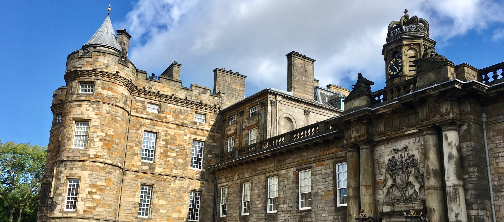

Holyrood Palace
Edinburgh, Scotland - September 19, 2017
Holyrood Palace, despite its ban of photography inside the building, was one of the most amazing yet crazy places I think I've ever visited.
The palace is the official residence of Queen Elizabeth II and is located at the bottom of the Royal Mile in Edinburgh, so basically just down the hill from Edinburgh castle. Unlike Edinburgh castle, Holyrood Palace has served as the principal residence of the Kings and Queens of Scotland since the 16th century and still hosts state occasions for about 1 week a year. My visit consisted of an official audio tour, with an elderly male British voice guiding me through the palace's grand rooms and spiral staircases.
The tour started out relatively normal, it described the current dining, drawing, privy, and throne rooms and how the decorations changed over time. Queen Victoria added many of the tapestries to the rooms to make the rooms more "homely" and some of the furniture dated back to the 1600s. King Charles II (who looked like he could have been a member of Queen) was the main mastermind behind the 17th century architecture and used these rooms as a way to impress his guests.
One of the rooms he created was the Great Gallery, a long room decorated with 110 portraits of Scottish monarchs, dating back to Fergus I (r. 330 BC). Apparently the portraits were all done by the same artist, Jacob de Wet II, and he was able to finish all the portraits in 2 years. If my math is correct, that ended up being about a portrait a WEEK, which is insane.
I entered Mary Queen of Scots's room next. Technically the room had been Lord Darnley's, her husband, but it formed the Queen's apartments after some reconstruction on the palace. Her bed had just been preserved, so there was very little natural light coming into the room in order to prevent the fabric from fading. There was a life-size bust of Mary at the far end, beside a large portrait of her hanging on the wall. The tour continued up a tight spiral staircase that privately linked the King's and Queen's bedchambers. I ended up in Mary's actual bedroom on the second floor.
This is where things got crazy. Apparently on March 9th, 1566, while the Queen was eating supper in her private dining room, her husband Lord Darnley burst in and dragged her private secretary, David Rizzio, who was dining with her, from the room. It was rumoured that the Italian courtier was the one who had impregnated Mary. Lord Darnley accused his wife of adultery and then ordered someone to murder Rizzio, who was hiding behind Mary. Mary was held at gunpoint while Rizzio was stabbed 56 times. 56 TIMES! That murder destroyed Lord Darnley's chance at the throne and caused Mary's ultimate spiral into her son being taken away from her, her imprisonment by Queen Elizabeth I, and her eventual execution for treason.
While I digested that crazy story, I wandered out of the palace into the ruined Augustinian Holyrood Abbey. The abbey was founded in 1128 because King David I of Scotland had a vision of a stag accompanying a cross known as the Holy Rood. So basically the abbey was founded because the king saw a holy deer. And I thought I had left the strange part of the palace. The abbey fell into ruin in the 1600s and the roof finally collapsed in the 1700s. It did turn out to be a great photo opportunity, though.
My tour ended with me in the gift shop, enjoying the shelf of corgi-related souvenirs. I needed a happy, uncomplicated moment of plush puppies after a tour of a lifetime. Holyrood Palace is a tour that will stay in my mind almost as much as the knife stayed in poor Rizzio.
Cheers!
- Caileigh Marshall